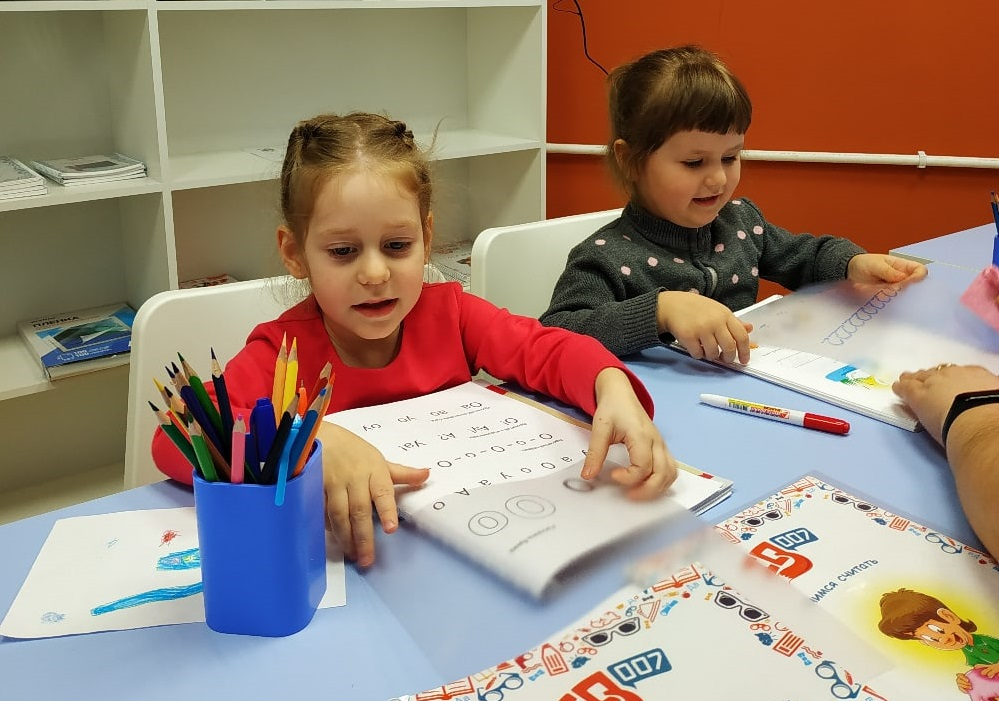

Первое занятие — бесплатно! Оставьте свой номер телефона, и мы запишем вас на пробное занятие
Телефон нужен для связи с вами: он не будет передан третьим лицам
позволяющий без напряжения прочитывать и усваивать огромные массивы информации.

«Войну и мир» за 3 часа 20 минут
Ученики нашей школы скорочтения учатся правильно читать тексты и понимать их содержание. У них формируется развитый, стремящийся к самообучению интеллект, обогащается запас слов, усиливается память.
Памяти и внимания
Логики
Скорости обработки информации
Вербального интеллекта
Арифметико-практического мышления
Эмоционального интеллекта
Артикуляционного аппарата
Творческих способностей
|
Было |
Стало |
|---|---|
|
Не знала букв, терялась в пространстве,
слабая концентрация внимания, не усидчива. |
Знает 30 букв, двигает предметы в пространстве,
телепатия, делает сальто назад. |
|
Достижение |
Было |
Стало |
|---|---|---|
|
Чтение вслух |
70 сл./мин. |
140 сл./мин. |
|
Чтение про себя |
70 сл./мин. |
140 сл./мин. |
|
Достижение |
Было |
Стало |
|---|---|---|
|
Чтение вслух |
70 сл./мин. |
140 сл./мин. |
|
Чтение про себя |
70 сл./мин. |
140 сл./мин. |
Группы по 3-4 человека
Группы по 3-6 человека
Группы по 3-6 человека
Наше главное преимущество — качественная подготовка педагогов в учебно-методическом центре. Каждый наш сотрудник обучается очно, после чего сдает экзамены и получает сертификат.
Качество обучения во многом зависит от преподавателей. Поэтому мы выбираем кандидатов с высшим образованием в области психологии, педагогики и лингвистики.
Все преподаватели проходят специальное обучение методике IQ007 с углубленным погружением.

Первое занятие — бесплатно!
Закажите звонок, и мы запишем вас на пробное занятие.
В результате обучения в нашей школе ребенок станет правильно, бегло читать тексты и понимать их содержание. У него сформируется развитый, стремящийся к самообучению интеллект, обогатится запас слов и разовьется речь.
Школьникам больше не придется допоздна делать уроки — скорость выполнения заданий возрастет в разы!
Благодаря скорочтению, ребенок полюбит учиться, ведь он увидит, что это можно делать легко и с удовольствием!Благодаря скорочтению, ребенок полюбит учиться, ведь он увидит, что это можно делать легко и с удовольствием!
Навыки, полученные в нашей школе, позволяют без напряжения прочитывать и усваивать огромные массивы информации. Знания приходят быстро, легко и сохраняются на долгие-долгие годы!
Скорочтение — целый набор навыков, каждый из которых мы тренируем в течение всего курса.
Это и чтение без регрессий, и сканирование, и чтение без артикуляции, и многие другие приемы. Приходите — узнаете!
Среднестатистический взрослый человек читает со скоростью 250 слов в минуту.
В нашей школе вы можете увеличить этот показатель в 3—5 раз.
Как раз у детей наблюдается очень быстрый прогресс в чтении. Чем раньше ребенок начнет учиться скорочтению, тем проще ему будет во всех областях знаний.
Мы учим читать быстро без потери качества. При этом в нашей программе есть целый набор техник осмысления и запоминания текстов разной степени сложности.
Наша программа построена таким образом, чтобы развивать не только скорость чтения, но еще и память, и интеллект в целом.
Дети, занимающиеся у нас, все легче и легче осваивают школьную программу. В итоге, времени на домашние задания уходит меньше.
В нашей школе вы узнаете, что для каждного типа литературы нужно применять определенные техники чтения и запоминания.
Будь то художественная литература, техническая или делопроизводство: умение применять нужную технику чтения увеличит вашу эффективность и сэкономит время.
Среднестатистический взрослый человек читает со скоростью 250 слов в минуту.
В нашей школе вы можете увеличить этот показатель в 3—5 раз.
У нас есть курсы для всех возрастов: дошкольников, школьников, студентов и взрослых и для пенсионеров.
Кроме того, наши курсы направлены на гармоничное развитие основных параметров интеллекта: памяти, внимания, а также чтения.
Тренируя свой мозг по нашей методике, вы защищаете его от болезней пожилых людей.
У нас улучшилась успеваемость, техника чтения! А самое главное — на подготовку домашнего задания теперь уходит в два раза меньше времени!..
Читать весь отзывЗдравствуйте! Хочу поделиться впечатлениями от посещения моими детьми занятий школы IQ007. Занимаемся по курсу ментальная арифметика и скорочтение.
Начнем со скорочтения: дочь (6 лет) знала буквы и умела читать по слогам с 4 лет, но делала это медленно, с неохотой, никогда не брала в руки книгу сама, при чтении меняла порядок букв, ну и, вообще, очень не любила это занятие. После рекомендации моей знакомой мы решили пойти на скорочтение в школу IQ007. Занимаемся 3 месяца...
Читать весь отзывНаша школа скорочтения находится по адресу ул.Дмитрия Ульянова, д.7 Смотреть на карте
Первое занятие — бесплатно!
Закажите звонок, и мы запишем вас на пробное занятие.